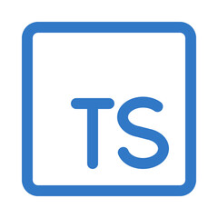

A Typed Superset of JavaScript
TypeScript is an open-source language which builds on JavaScript by adding static type definitions. It allows for optional typing, type inference, and is compiled to plain JavaScript.
function add(a: number, b: number): number {
return a + b;
}
let sum = add(2, 3);
console.log("Sum: " + sum);